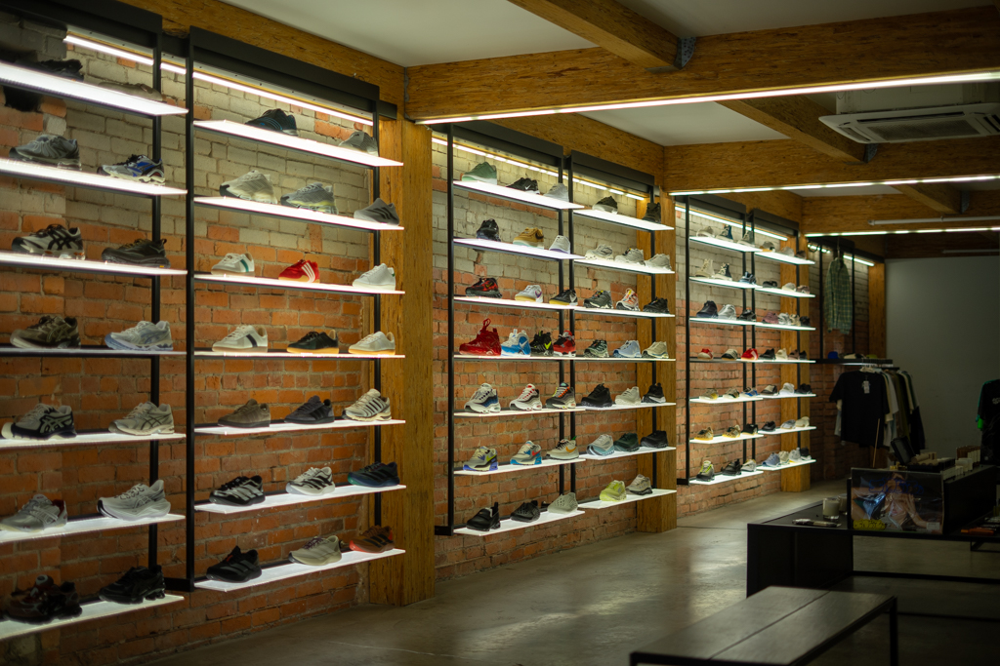
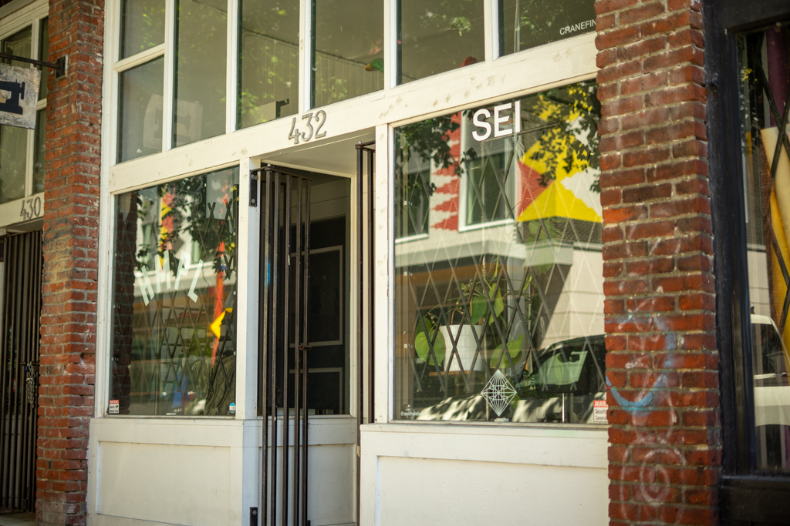
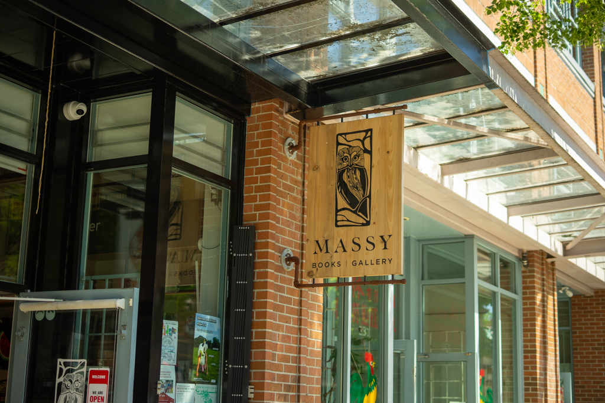
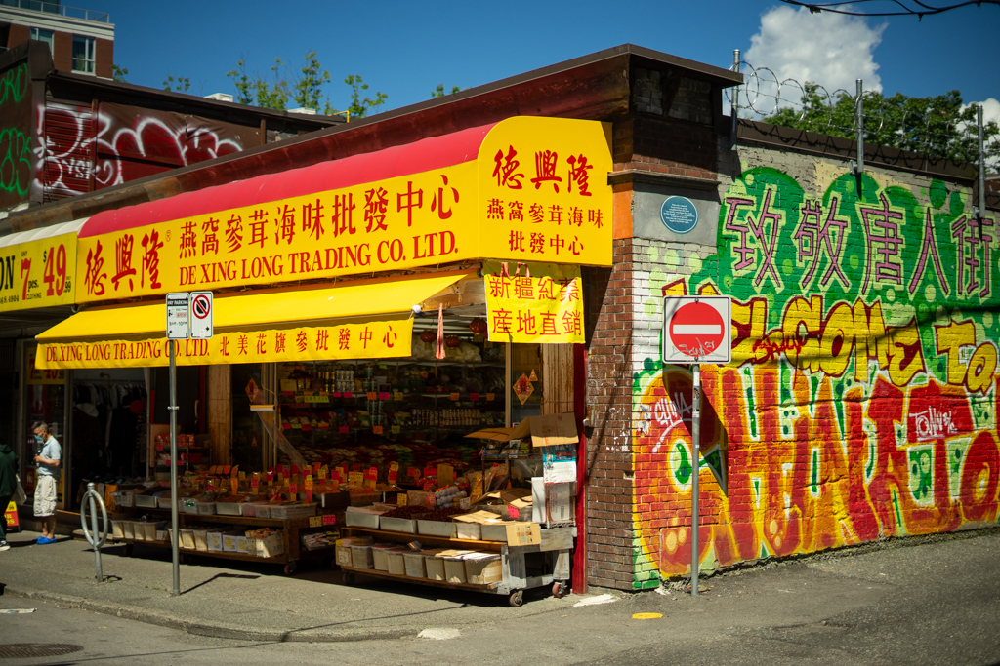

Early Start in Chinatown
Tap a stop to read more — open the guide to customize this route.
When I used to live closer to Chinatown, this would be a typical way I'd start my summer morning when I was off work. If you are visiting, and are looking to get a workout in, and explore Chinatown too, this could be a great option for you.
First, head to The Program Fitness for an early morning class. They have many daily options, but for this plan, I'd suggest an 8-9ish one to get the day started.
Once you get your workout out of the way, you can cool off and step over to Hunnybee where you can get a coffee, treat, or a full breakfast. I always land on the pancakes. Enjoy watching the bikers fly by and Chinatown awaken.
From there, head over to Touski or Propaganda for another coffee while you wait for the shops to open.
If a workout wasn't enough, I'd walk between Livestock, HMPL, Massy Books, and Gore Street Vintage to see all that Chinatown has to offer from vintage clothing, to new sneakers, and books. While you're exploring some of my favorite shops, you'll also stumble across locations like De Xing Long Traders to get the true Chinatown experience. Head into any of these spots to get an idea of what makes this neighborhood so unique.

5. Livestock

6. HMPL

7. Massy Books

8. Gore Street Vintage

9. De Xing Long Trading Co. LTD
If by this time you haven't stumbled into a spot to get lunch, I'd recommend Say Hey Cafe for a sandwich or Phnom Penh for some signature dishes.

Finally, if you're totally over being healthy for this morning and have gotten enough steps in, and your early evening is started, you might as well head over to Boxcar for a cocktail on the back patio before finally heading home to hit the showers!